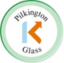

{kind=link}
{kind=link}
{kind=link}
{kind=link}
{kind=link}
We can manufacture in either Hardwood or Softwood, or a combination of both in either Single or Double Glazed options. Single glazed Sashes can only be used in Listed or Conservation Buildings, and in this situation, we would manufacture to match the existing sections and profiles exactly, including internal architraves, linings and window boards, etc.
The double glazed version is of a high specification, including weather seals to staff and parting beads, 54mm thick Casements, which incorporate 24mm Pilkington K glass, with any glazing bars planted to this to achieve the traditional 20mm bar width.
We can manufacture Sashes in either Box Sash, Weighted and Corded, or with Spiral Balances. Other options include Dummy Sash windows in either standard or heavy section timbers to suit reveal depths. All timbers are vac vac preservative treated after manufacture and before assembly, and are either primed and undercoated or stained with two coats of microporous stain.
We can also offer a full overhaul service on existing Sash windows which can include either easing or replacing of Sash Casements, draught stripping of the same, new Parting and Staff Beads, new Cords, new Furniture and any repairs to Cills and Sash Boxes. All repair timbers are in Hardwood, treated and primed prior to installation.
Fitting is available on all the above.